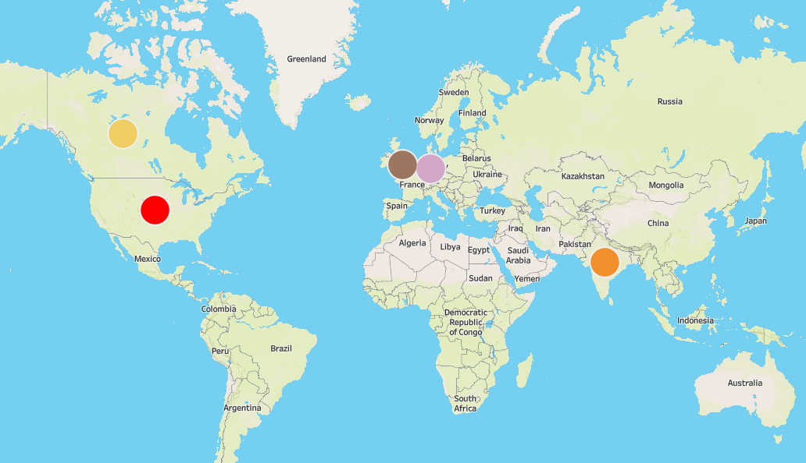

In this project, data from over 8,000 restaurants was analyzed to find attributes that increase restaruant revenue the most.
Other measures such as average meal price, restaurant ratings, and the most popular cuisine in each location type were also analyzed.

Analyzing restaurant revenue dataset in SQL Server.

Cleaned world_layoffs dataset by removing duplicate rows, normalizing values, and updating null values.

Analyzed daily and monthly trends in pizza sales. Looked into attributes such as pizza category that contribute to the most sales. Lastly, ranked the top and bottom 5 pizzas by revenue, total pizzas sold, and total orders.
Explored the pizza sales dataset from a pizza restaurant to find attributes that contribute to the most revenue and total pizzas sold.

Analyzed the risk factors that increase ones likelihood of having a stroke such as age, bmi, smoking status, etc... in over 3,000 individuals who participated in the study. Compared factors that increased the likelihood of having a stroke to the control group (stroke = 0) in the study.

Built a logistic regression model that can predict if an individual will have a stroke based on their attributes (age, bmi, hypertension, etc...), and compared it to the train data to see how well it performs on unseen data.